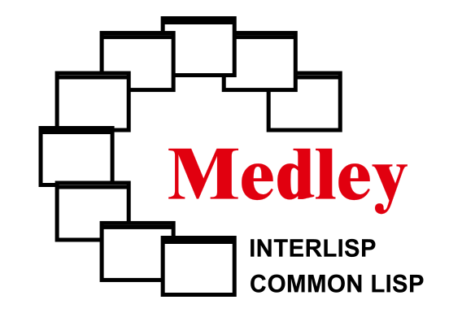

On November 16, 2023 Steve Kaisler gave the talk “Software Archaeology: The Medley Interlisp Modernisation Project” at a Computer Conservation Society event in London and the recording is available here.
March 2023 Bay Area Lisp Meeting
An overview of the Medley Interlisp project was presented at the March Bay Area
Lisp Meeting. The following recording provides an introduction to the work
being undertaken by the Medley project.
Closed Issues
The issues closed by the team can be found in our GitHub repository.
1 - 2023 Annual Report

Overview
The Medley Interlisp Project has made significant progress toward its goals of preserving, extending, and documenting the “experience” of Interlisp for now and for the future. This annual report highlights our achievements and ongoing efforts.
Key Accomplishments
We’ve structured our work around project objectives: lower barriers to entry, adapt to modern environments and user expectations, complete “work in progress”, demonstrate applications built in and for the system.
Lower Barriers to Entry
We want to allow newcomers to experience the system and ease of use without complex setup and configuration, so that more individuals can participate.
Online.Interlisp.org: The online.interlisp.org site provides a quick and easy way for interested users to try Medley without any installation or setup. It enables any user to run the full Medley experience within the context of their browser.
In 2023, we improved the initial version of online.interlisp.org and began to attract a user base. Between 11/15/2022 and one year later: 187 users registered on the site, leading to 1522 unique Medley sessions. Unregistered users (i.e., guest logins) accounted for an additional 1971 unique Medley sessions.
Historical Interlisp Online: As an extension to online.interlisp.org, we have implemented a proof of concept that runs historical versions of Interlisp (Harmony, Intermezzo, Koto, etc.) in a manner similar to the Medley sessions. This proof of concept is based on the Xerox Dandelion emulator (named DarkStar) developed by the (now closed) Living Computer Museum in Seattle. Our intention is to move this project from proof of concept to full implementation in the next year.
Running in the browser: Recently, we have been exploring the possibility of using recent advancements in the “Web Assembly” emulator to run Medley locally in a browser. There remain significant issues we will need to address, but this is a very promising direction.
Support for SDL2: We added to Medley support for SDL2 which can now be built from source. Further work is needed to provide appropriate binaries in the software releases. The SDL2 backend is useful for running Medley on operating systems where X-Windows is not directly available, such as Windows, or which, being based on Wayland, may degrade the performance of X-Windows applications like Medley. Examples of the latter are Raspberry Pi OS Bookworm and later and ChromeOS.
Support for running ‘natively’ on Windows: Previously, the only way to run Medley on Windows was via the Medley Docker container or via Windows System for Linux. Both of these require significant setup and expertise that are not common for Windows users. This year, we developed ‘native’ Windows support for Medley (based on Cygwin and SDL2) that is much more compatible with the ordinary setup and practices of Windows users.
Better Support for AArch64: We extended the build scripts of the Maiko virtual machine to compile and run Medley on the AArch64 platform under Raspberry Pi OS Bookworm and later. Now Maiko can generate loadups on this platform too.
Build and Release Automation: We completed the task of automating in GitHub Actions the build and release process for all major components of Medley including Maiko, Medley, Notecards and Online. These automations were synchronized, to the extent possible with the corresponding manual build, loadup and release tasks. Automated releases were set to run Weekly.
Installers for Major Platforms: Previously, installing Medley on most platforms was a multi-step task, often requiring some degree of experience with various of the platforms’ administrative tools. We developed ‘single step’ installers for MacOS, Windows (native), Windows running WSL, Debian-based Linux, and for other Linux distros. This makes the task of installing Medley straightforward for users who want to quickly and easily explore Medley.
New Startup Script: We developed a new, more comprehensive script for starting up Medley on all platforms. The script includes embedded documentation. It makes the task of configuring, starting up and managing Medley instances clearer and more straightforward in most circumstances.
Revamp ‘Loadup’ Scripts: Loadup is the process of building a new image/release of the Medley Lisp code. We revamped the scripts that run the loadup process to make them more internally consistent, easier to maintain and to synchronize them with the automated loadups in our GitHub Actions for building releases. The load process was not fundamentally changed.
Medley Tool Enhancements
While Medley had support for Common Lisp constructs, the extension of Interlisp tools to the use of what evolved as the standard for Lisp – “Common Lisp” – was incomplete. Our goal has been that Medley tools should work as well or better than they did for Interlisp alone. This was work “in progress” in the 1990s, but it wasn’t complete and somewhat buggy. Some notable additions were implemented.
HELPSYS extended: HELPSYS is the Interlisp tool which looks up and displays the information about an Interlisp function in the Interlisp Reference Manual. To aid us in the upgrade of our Common Lisp implementation, HELPSYS was extended to look up in the Common Lisp HyperSpec, and also more internal Medley documentation.
TEdit Redone: Enhancements to our existing text editor in preparation for better Unicode support and to improve system efficiency, reliability, and maintainability. This work included completing and debugging the subroutine-stubs for ingesting Xerox Alto’s Bravo-format files, so that legacy documents can now easily be converted to modern formats (PDF).
PDFStream: Medley has a native imagestream implementation for producing PostScript®-format hardcopy files, but it does not (yet) include code for producing or displaying PDF files. As an interim solution, an imagestream was defined to create PDF files indirectly, by first producing a PostScript file within Medley and then executing a UnixUtils shell command to run an available PostScript-to-PDF Unix utility (e.g., Ghostscript’s ps2pdf). In a similar way, the Medley Filebrowser’s “See” option was extended so that PDF files are opened automatically in a separate window by a resident PDF viewer (Preview, Acrobat…). Filebrowser automatically converts PostScript files to PDF so that they can also be seen.
UnixUtils: In the last year we enhanced the set of tools that enables Medley to reach into its surrounding platform to accomplish tasks that are not available (and too extensive to implement) in Medley. As an example, the ShellBrowse function will open the specified URL within a browser running on the host platform. Similarly, ShellOpen can be used to open a PDF file using whatever PDF viewer is resident on the host platform.
GITFNS (use of Git and GitHub) extended: Considerable effort went into the integration of Interlisp File Manager and GitHub, including a menu-driven interface to comparing Lisp source files on a function-by-function basis. This facility is crucial to the way the system manages the “residential style” development tools of Interlisp with GitHub.
Variety of Issues Closed and PRs Merged
The project development is managed through use of GitHub. There were 216 issues since the beginning of 2023, 69 of which closed, although many of those were website issues. Some of the issues led to 141 Pull Requests over the same time span, 132 of which merged. We continue to smooth some of the rough edges of using the Interlisp programming tools with Common Lisp compatible functions.
Community Engagement
We’ve actively engaged with the Lisp and Software Preservation communities, fostering collaboration and knowledge sharing.
Website Enhancements
The Interlisp.org website continues to evolve. Our primary goal over the last year has been to clarify our messaging and evolve the website to support it. We have focused on adding content and redeveloping the site making content easier to find. In parallel we have worked to ensure our website is indexed allowing web searches on subjects related to Interlisp and Medley to direct users to appropriate content. Work on search optimization has also enhanced the internal website search capabilities. Efforts to improve the Interlisp bibliography continue across both the Zotero site holding the bibliographic material and within the Interlisp website.
Content Organization and Accessibility: In 2022, a first attempt at reorganizing the website was completed. Over the last year, we continued to revise and refine what and how to present material on our website. Changes are driven by new and improved content as well as improvements in our understanding of the story we need to tell. The result has been major improvements in website navigation. We continue to explore and work on new methods of enhancing our story telling. Work in progress includes a carousel on the landing page which will provide snapshots representing different facets of the Medley project.
Bibliography: The website representation of the bibliography was reworked providing a cleaner interface and access to more details on each publication. In addition, GitHub’s automation tools were leveraged to ensure that the website’s presentation of the bibliography is synced with the master Zotero copy daily. Work continues on organizing the Zotero database. Efforts have focused on cleaning up individual entries and standardizing our representation of content. Going forward this effort will continue along with efforts to improve searching and filtering content.
Search Engine Optimization: In the last year we tracked down and eliminated the majority of the inbound link errors. We attempted to ensure all previously published links were remapped to an appropriate page and 404 errors were minimized.
Custom Search: We improved search within the Interlisp.org website extending it to beyond just website materials to include content published on our GitHub site. Searches now cover the majority of the artifacts created by the project.
Presentations
We are continuing to spread information about the availability of Medley through technical presentations. This year, our team presented three talks on Medley Interlisp.
BALISP: In March 2023, we presented a discussion of the project’s efforts on restoring and modernizing Medley Interlisp to the Bay Area Lisp (BALISP) meetup group. The slides are available and the talk was recorded.
SPN Idea Workshop: On November 2, Larry Masinter participated in the Software Preservation Network’s Idea Workshop; we continue to pursue some academic projects in the software preservation community.
Computer Conservation Society: Steve Kaisler, a member of the Computer Conservation Society (CCS) in London, England, presented a talk entitled “Software Archeology: The Medley Interlisp Restoration Project” on November 16, 2023 in London, England. This talk discussed a brief history of Interlisp, some applications, and some issues and challenges in modernizing the Medley Interlisp software. The talk was recorded and will likely be posted soon.
Project and Organization
As the work proceeds we expand our resources and adjust our processes to better achieve the project goals. In 2023 our team grew and we devised ways of keeping track of the work on the GitHub repositories.
Three new regular contributors joined the team, Matt Heffron, Paolo Amoroso and Andrew Sengul. Matt joined the team as a former Medley and Interlisp user and developer, and contributor to various projects. Paolo exercised Medley as a user, reporting any bugs and issues that needed attention, and reviewed the existing documentation. Andrew, who came to the project as a Lisp developer, undertook a major redesign of the project site, restructuring it according to the project goals and making it easier to find the information users need, as well as clarifying and expanding the content. He also investigated how the development of Interlisp and other Lisps can proceed. As part of this work, for example, he started checking out the Medley test harness in view of using it again for testing system builds.
In our GitHub repositories we began tagging issues and pull requests with a set of projects that will help us track the progress of the work and ensure it fulfills the project goals.
Looking Ahead
As we move into 2024, we remain committed to advancing the Medley Interlisp Project.
A long-term goal is “sustainability”: Get the system in a state where no prior knowledge is necessary for developers to make changes.
Make sure it is possible to rebuild the system from sources (recompiling every Lisp module and LispUsers).
Identify all of the documentation we have, catalog it and link it with the source code for the versions that we have.
Another goal is to extend our outreach activities to both the extent Lisp communities and to the broader Computer Science community.
We continue to extend and refine the documentation on Medley Interlisp, including volumes on the Lisp Object-Oriented Programming System (LOOPS).
We are evaluating a variety of Interlisp and Common Lisp applications with the goal of making them publicly available for download and use.
Thank you to our contributors, supporters, and the wider community for making this journey possible.
Stay tuned for more exciting developments in the coming year!
2 - 2022 Medley Interlisp Annual Report
Introduction
We have made considerable progress on the Interlisp software preservation project, and we want to offer tours and collaboration for those engaged in similar or related software preservation efforts.
Interlisp was an early and unique software development environment (IDE) developed in the 1970’s and 1980’s at Xerox PARC, and a testbed for novel software development tools. The Medley version of Interlisp-D was built as a portable Virtual Machine, which has allowed us to bring the system forward to run on a wide variety of modern hardware and operating systems.
Interlisp was also an environment that supported many novel applications, especially in Artificial Intelligence of the 1980s.
We are approaching the project as a general software-preservation-through-emulation project, starting with source code. While a “strict emulation” mode is possible, we’ve been focusing on an updated version that fixes some of the compatibility problems with modern hardware (keyboards, mice, etc.) and implements more modern modes of user interaction.
Accomplishments
Advances over the last year include:
New versions of online.interlisp.org give users a virtual “Lisp machine” accessed through the browser without any software to install.
New versions of (open source, in GitHub) emulator and VM images with numerous improvements.
Support for virtual networking of the Xerox Network Systems (XNS) protocol stack (pre-dating TCP/IP, as well as the “PUP” (PARC Universal Packets).
Further work reviving classic Interlisp applications, including Rooms (desktop management), Notecards (Hypertext from the 80s, well before the Web), LOOPS (Lisp Object Oriented Programming System), melding Smalltalk style object inheritance with class-based knowledge engineering tools.
Continued integration of Common Lisp standard features with Interlisp development tools.
A large (but still unsorted) Zotero library of referenced texts, papers, documents, and presentations.
A new expanded Interlisp.Org website that documents the project, software history, goals, contributors, and other components.
Additional development of GitHub Interlisp organization and repositories that provide a record of issues, changes, bugs, and fixes.
Getting Involved
We meet weekly to discuss open issues and other agenda items. Meetings are recorded. We’d like to talk to others who might be interested in collaboration or using our components for other emulation projects.
To “revive” something is to make it live again. Making Medley Interlisp live again means putting the system in order so that others without a previous deep background in Interlisp can use and appreciate it (if only as a virtual antique).
The Medley Interlisp project started in earnest in March of 2020 (at the beginning of the pandemic). This report focuses on activities and accomplishments since the December 2020 virtual meeting of LispNYC (recording at: https://www.youtube.com/watch?v=x6-b_hazcyk).
In this document, work in the project is broken down into three main categories:
Work on the software itself – debugging, adapting, etc.
Documentation for the software
Building an organization and developing a community
Software Archeology
“Software Archeology” is a process like putting together a functional bowl from pottery shards. We have not completed the task, but we have a stable base.
The software is old: it had been developed between the ’70s and the 90s, with many revisions, by many different people, working with little internal documentation. There were many “excursions” to support systems or options that are no longer available. Over the last 25 years, software standards evolved for C, Common Lisp, character codes, and operating systems.
Conformance: We have been making Maiko conform to modern C compiler expectations. Removing support for outdated systems simplified the task.
SDL: Support is underway for SDL, a multi-platform (Windows, Mac OS X, Linux, iOS, and Android) graphics toolkit as an X11 replacement. SDL can be used instead of X11 as the shim to the native window system, which (we hope) will allow the system to run on Windows without separately installing X11, Docker Desktop, or WSL2.
Because of the cleanup work, the code is much more portable than ever before. Systems we’ve tested on or regularly build for include
Operating systems: macOS, Linux, FreeBSD, Solaris 11.4
CPU architectures: i386, x86_64, arm7, aarch64, SPARC-32 and -64
This covers Raspberry Pi (linux.arm7) and Windows 10 (with WSL2 or Docker). and Windows 11 (includes WSL2). Performance is outstanding. A $40 Raspberry Pi completes Lisp tasks 250-1000 times faster than the Dorado (the $90k high-end Xerox 1132 Lisp machine).
Medley
The rest of the system is implemented in Lisp: Interlisp and Common Lisp interpreters, compilers, debugging tools, editors, window system, graphics, device drivers. In the last year:
Organization: We have been cleaning out and organizing, comparing dates on files, and deciding which to keep; building maintenance scripts and Lisp utilities.
EOL and character conversion: the code for handling end-of-line and character codes was generalized, on the way to full Unicode support. (See Medley Issue #2)
Git integration: Interlisp’s file manager was designed for versioned files with version numbers. GitHub has a different graph model of history. We built “restore-versions” to restore numbered versions from git logs, but the problems are deeper. If the Interlisp style of programming is going to be supported, we have to solve these problems. (see Medley issues #265, #226)
Debugging: We found and fixed a variety of bugs: a few Y2K problems, some instances of “bit rot” and smashed files, incomplete implementations, and code patched at “wrong level”.
Modernization: Window manipulation by title bar dragging and corner selection, mouse wheel scrolling, clipboard–these seem to be necessary enhancements for modern users.
Release process & automation: GitHub Actions are now used to automate the build process for Medley releases and also a Docker container, deployed to Docker Hub as Interlisp/Medley. This gives a way to run Medley in the cloud (on Amazon Web Services, Azure, Google Cloud) or on the Windows Desktop with remote access in a browser.
Interlisp Applications
One of the reasons for restoring Medley Interlisp is to support the revival of applications written for it.
Notecards: Notecards is a hypertext system developed well before the web or Apple’s Hypercard. http://notecards.online was built with the Medley/Docker release, running Medley “in the cloud,” with web browser access. We are adopting this to work for other Medley Interlisp systems, and for others to build.
Rooms: Rooms is a Lisp desktop manager for less cluttered window access with interesting innovations. In the Medley repository. Loads but untested.
CLOS: The Common Lisp Object System adds a style of Common Lisp class structures added after Medley’s Common Lisp implementation to the ANSI standard. Also loads but untested.
LOOPS: An object-oriented Lisp addition (to Interlisp) prior to CLOS. Of interest because of AI applications built using it, including “Truckin’” – a demonstration of “knowledge programming [see paper]. The source code for the Truckin’ application exists and will be used to test LOOPS once it fully loads and is compilable.
Interlisp: The Language and Its Usage, by Steve Kaisler, originally published by John Wiley & Sons, scanned and converted to a compact PDF. This book describes the core features of the Interlisp language.
Medley Interlisp: Tools and Utilities, by Steve Kaisler (undergoing editing) describes the editors and tools to be used for program development. It is expected to be completed and uploaded to Interlisp.org in early December 2021.
Software Documentation
We’ve converted TEdit source documents to PDF (see medley-pdfs). We have the IRM (Interlisp Reference Manual) with links to online help (DInfo), User Guides, Release Notes, Primer. We still need to convert and publish documentation for some Interlisp applications and to organize and update to make it easier for newcomers.
Bibliography
Zotero is an Internet bibliographic service. We have set up an Interlisp Zotero of Lisp-related material, many items with the source material as PDFs. Our goal is to have a comprehensive source of information about Interlisp-related technical papers, technical reports, and manuals for various versions and implementations of Interlisp (and, for comparison) contemporaneous “Lisp Machine” competitors.
Working older versions
In addition to modern Medley, we have begun to organize other emulations of older versions, and a “history” repository, including files from Interlisp-10, the “DarkStar” emulator of the Xerox 1108 / 8010 hardware, and sysouts for many different releases of Interlisp-D. We’re working on making an earlier version of Medley (running on an emulated DosBox); currently available with instructions in the Interlisp/DOS repository.
Outreach
To attract users and supporters, we need to make the project known.
We developed and installed a GitHub “code of conduct”, “contributor’s guide” and issue templates (although we haven’t been using the templates and need to review them).
We depend on volunteers to help. If you’d like to help but aren’t sure how to, ask.
Future activities
There were some tasks/projects listed here; they have been moved to GitHub issues.
Acknowledgments
We’ve gotten a lot done, but there’s quite a bit more to do. Thank you to Abe, Alexander, Arun, Bill, Blake, Frank, Herb, John C, Larry, Michele, Nick, Paul, Peter, Ron, Wayne, Zoe.
A moment in memoriam to past contributors, including John Sybalsky, Warren Teitelman, Danny Bobrow.